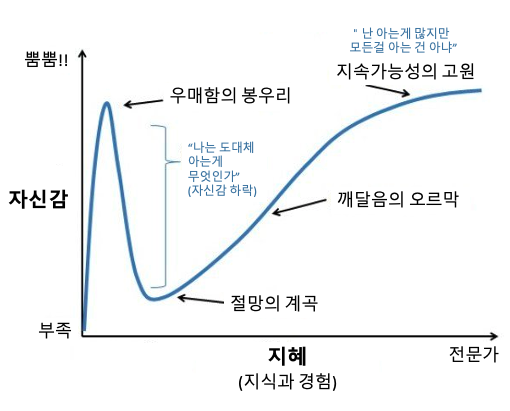
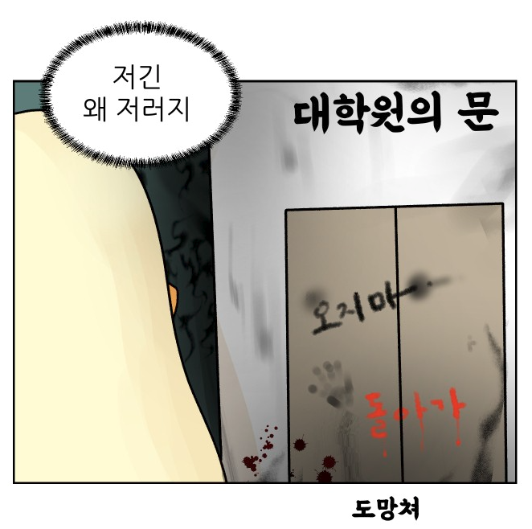

[Talk] 두런두런 회고
1. 어쩌다 데이터 사이언티스트
메타 인지의 중요성
첫 강의에서 가장 기억에 남은 것은 메타 인지와 회고의 중요성이었다.
메타인지는 간단하게 요약하면 “너 자신을 알라”였던 것 같다.
자신을 객관화하여 보고 아는 것과 알지 못하는 것을 구분하는 능력이 중요다하는 것을 설명하였는데, 그 당시에는 새로 배우는 것이 많고, 이미 알고 있다고 생각했던 것에서 더 깊은 지식들이 나오면서 뭘 모르는지 모르는 상태여서 매우 공감이 되었다.

공감이 많이 되던 짤
부캠을 보내며 그 당시에는 절망의 계곡에 위치해있었던것 같다.
글을 쓰는 지금도 깨달음의 오르막을 오르기 위해 노력 중이지만, 내가 어떤 것을 모르고 있는 지 정확하게 파악하는 것은 아직 어려운 것 같다.
2. 직군 이야기, 삶의 지도
성장곡선과 고민상담소
“다른 사람보다 많이 부족한 것 같아요”와 같은 고민을 가진 사람들에게 많은 도움이 되었을 것 같은 강의였다.
다양한 성장곡선이 있지만, 결론은 노력을 계속 해나간다면 우상향을 할 것이라는 것이 핵심이였다.
부캠을 진행하면서 내가 성장을 하고 있긴 한건가라는 고민을 계속 하였다.
이번에 회고 글을 작성하면서 발표자료들을 살펴보니 다시 기억이 떠올랐는데, 그 당시에, 하루 단위로 보고 비교한다면 정체되는 날도 있고 떨어지는 날도 있다고 하였었다.
오르는 주식도 떨어지는 날도 있으니 단위를 크게 보면 우상향을 그리고 있을 거라고 하셨는데, 길어도 주 단위로 바라보며 저번주보다 달라진게 없는 것 같은데 하며 조바심을 가졌던 것 같다.
처음 시작했을 때랑 비교한다면 지금은 많은 성장이 있었던것 같아 마음이 조금은 편해지기는 한것 같지만, 아직은 부족한 부분이 많은 것 같다.
3. 고민 상담소, 이력서
🥕마스터님, 이력서를 써야 하는데 이력이 없어요🥕
가장 큰 고민이 아닐까 싶은 내용이었다.
강의를 들어보면서 느낀점은, 이력서에 쓸 내용을 너무 거창하게 생각해서 쓰기 어려운 것이 아닐까라고 느꼈다.
물론 외부 대회를 나가거나 해커톤에 참여하여 좋은 성적을 받은 것을 작성하는 것도 좋지만, 프로젝트를 진행하며 고민한 내용과 해결 과정을 잘 보여주는 것 중요한것 같았다.
특히 단순히 나열하는 것보다 자신의 노력과 문제를 겪었을 때 해결하는 과정을 잘 보여주면서, 보는 사람을 배려하는 이력서를 작성하여야 된다는 것이였는데, 적고나서 보니 여전히 이력서를 쓰는 것은 쉽지 않아 보인다.
4. 커리어 프레임워크, 산업
앞으로의 커리어와 진로탐색
엔지니어 커리어 프레임워크에 대해서 설명을 해주셨는데, 드랍박스 부분이 특히 인상 깊었다.
메타인지와 연관 시켜, 객관적인 지표처럼 활용을 할 수 있어, 내가 부족한 점을 파악하고 어떤 부분을 채워야 될지 알 수 있어서 좋았다.
정리하며
이제 얼마 남지 않은 기간을 남겨두었고, 두런두런 회고를 정리하면서 앞으로 어떻게 성장해야 되는지 다시 한번 되돌아 보는 기회가 된것 같다.
처음 부캠을 들어 올때는 취업 생각만 있었지만, 두런두런을 진행하면서 내가 원하는 길을 가기 위해 필요한 역량들이 어떤것인지 구체화 할 수 있는 기회가 되었고, 대학원에 진학에 대해서도 생각을 해보게 되었다.

댓글남기기